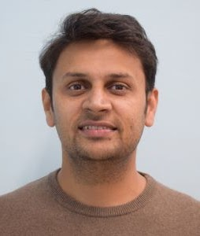

Assistant Professor | Geomatics Engineering | IIT Roorkee
Specializing in glacier dynamics, remote sensing, and cryosphere science with focus on High-Mountain Asia. Using radar DEMs, SAR interferometry, and optical remote sensing to understand glacier elevation changes, mass balance, and the role of supraglacial features in glacier response to climate change.
Education: B.E. in Electronics and Communications Engineering (University of Rajasthan, 2008), M.Tech in Geomatics Engineering (IIT Roorkee, 2012)
| Project | Role | Funding | Duration |
|---|---|---|---|
| Supraglacial lakes & ice velocity coupling, Greenland | PI | ISRO | 2022–2025 |
| High-resolution Himalayan glacier monitoring | PI | IIT Roorkee (FIG) | 2022–2024 |
| Glacier change classification – Uttarakhand | Indian PI | Bavarian Indian Center | 2021 |